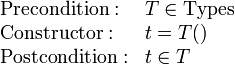
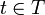
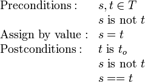
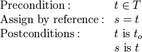
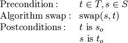

Einführung
Contents
Definition von Algorithmen
Es gibt viele Definitionen von Algorithmen. Hier sind die Ergebnisse einer Google-Suche auf englisch und auf deutsch. Die Grundidee ist aber immer gleich:
Ein Algorithmus ist eine Problemlösung durch endlich viele elementare Schritte. Die Teile der Definition bedürfen näherer Erläuterung:
- Problemlösung
- Damit ein Algorithmus ein Problem (genauer: eine Menge von gleichartigen Problemen) lösen kann, muss das Problem zunächst definiert (spezifiziert) werden. Die Spezifikation legt fest, was der Algorithmus erreichen soll, sagt aber nichts über das wie. Die Spezifikation beschreibt somit relevante Eigenschaften des Systemzustands vor und nach der Ausführung des Algorithmus (sogenannte Vor- und Nachbedingungen), während der Algorithmus einen bestimmten Lösungsweg repräsentiert. Mit Hilfe der Spezifikation kann getestet werden, ob der Algorithmus tatsächlich eine Lösung des gestellten Problems liefert. Diese Frage untersuchen wir im Kapitel Korrektheit.
- Endlich viele Schritte
- Die Forderung nach endlich vielen Schritten unterstellt, dass jeder einzelne Schritt eine gewisse Zeit benötigt, also nicht unendlich schnell ausgeführt werden kann. Damit ist diese Forderung äquivalent zu der Forderung, dass der Algorithmus in endlicher Zeit zum Ergebnis kommen muss. Der Sinn einer solchen Forderung leuchtet aus praktischer Sicht unmittelbar ein. Interessant ist darüber hinaus die Frage, wie man mit möglichst wenigen Schritten, also möglichst schnell, zur Lösung kommt. Diese Frage untersuchen wir im Kapitel Effizienz.
- Elementare Schritte
- Im weiteren Sinne verstehen wir unter einem elementaren Schritt ein Teilproblem, für das bereits ein Algorithmus bekannt ist. Im engeren Sinne ist die Menge der elementaren Schritte durch die Hilfsmittel vorgegeben, mit denen der Algorithmus ausgeführt werden soll, also z.B. durch die Hardware oder die Programmiersprache. Wir gehen darauf im nächsten Abschnitt näher ein.
Zur Frage der elementaren Schritte
Welche Schritte als elementar angesehen werden können, hängt sehr stark vom Kontext der Aufgabe und den Hilfsmitteln zu ihrer Lösung ab. Ein interessantes Beispiel ist die Geometrie der alten Griechen, wo geometrische Probleme in der Ebene allein mit Zirkel und Lineal gelöst werden. In diesem Fall sind folgende elementare Operationen erlaubt:
- das Markieren eines Punktes (beliebig in der Ebene oder als Schnittpunkt zwischen bereits gezeichneten Linien),
- das Zeichnen einer Geraden durch zwei Punkte,
- das Zeichnen eines Kreises um einen Punkt,
- das Abgreifen des Abstands zwischen zwei Punkten mit dem Zirkel.
Auf der Basis dieser Operationen kann zum Beispiel kein Algorithmus für die Dreiteilung eines beliebigen Winkels definiert werden, während der Algorithmus für die Zweiteilung sehr einfach ist.
Eine völlig andere Menge von elementaren Operationen ergibt sich für arithmetische Berechnungen mit Hilfe des Abacus (Rechenbrett), der seit der Römerzeit in Europa weit verbreitet war. Hier werden Zahlen durch die Positionen von Perlen auf Rillen oder Drähten dargestellt und Berechnungen durch deren Verschiebung. Eine ausführliche Beschreibung der wichtigsten Abacus-Algorithmen findet sich unter The Bead Unbaffled von Totton Heffelfinger und Gary Flom.
Die moderne Auffassung von elementaren Operationen wird durch die Berechenbarkeitstheorie (ein Teilgebiet der theoretischen Informatik) bestimmt. Verschiedene Mathematiker (darunter die Pioniere Alan Turing, Alonso Church, Kurt Gödel, Stephen Kleene und Emil Post) haben seit den 1930er Jahren versucht, den intuitiven Begriff der Berechenbarkeit einer Funktion zu formalisieren und sind dabei zu völlig verschiedenen Lösungen gelangt (z.B. Turingmaschine, Lambda-Kalkül, μ-Rekursion und WHILE-Programm). Interessanterweise stellte sich heraus, dass diese Lösungen alle die gleiche Mächtigkeit haben: Obwohl die elementaren Operationen jeweils ganz anders definiert sind, ist die Menge der damit berechenbaren Funktionen immer gleich. Die Church-Turing-These besagt, dass es prinzipiell unmöglich ist, eine mächtigere Definition von elementaren Operationen zu finden, aber dies ist unbewiesen. Am bequemsten für die Praxis sind die WHILE-Programme, da sie sich direkt auf die heute gebräuchliche Hardware-Architektur abbilden lassen. Die elementaren Operationen eines WHILE-Programms lauten in erweiterter Backus-Naur Notation:
P ::= x[i] = x[j] + c # Addition einer Konstanten zur Variable x[i]
| x[i] = x[j] - c # Subtraktion einer Konstanten von x[i]
| P; P # Nacheinanderausführung von zwei Anweisungen
| WHILE x[i] != 0 DO P DONE # Wiederholte Ausführung der Anweisung(en) P
# (x[i] muss sich innerhalb von P ändern, um eine Endlosschleife zu vermeiden)
wobei c eine beliebige ganzahlige Konstante (eine ausgeschriebene ganze Zahl) und x[i] die Speicherzelle i bezeichnen. Alle Speicherzellen können ganze Zahlen aufnehmen und sind anfangs mit Null belegt. Darüber hinaus wird vorausgesetzt, dass mindestens soviele Speicherzellen vorhanden sind, wie der gegebene Algorithmus benötigt, und jede Speicherzelle groß genug ist, um die größte auftretende Zahl aufzunehmen. Beide Annahmen sind in der Praxis nicht immer erfüllt.
In einem WHILE-Programm gibt es keine elementare Funktion, um die Summe von zwei Variablen zu berechnen. Diese Operation muss man bereits als Algorithmus implementieren. Der folgende Code berechnet die Summe unter der Voraussetzung, dass x[j] nicht negativ ist, indem x[j] solange dekrementiert (um 1 erniedrigt) wird, bis es den Wert 0 annimmt, und x[i] entsprechend bei jedem Schritt inkrementiert (um 1 erhöht) wird. Die alten Werte der Variablen gehen bei der Berechnung verloren:
Algorithmus: x[i] = x[i] + x[j] als WHILE-Programm (Vorbedingung: x[j] >= 0)
WHILE x[j] != 0 DO
x[i] = x[i] + 1;
x[j] = x[j] - 1
DONE
Man erkennt, dass tatsächlich nur die vier elementaren Operationen (Addition/Subtraktion einer Konstanten, Nacheinanderausführung von Anweisungen, WHILE-Schleife) vorkommen. Allerdings ist dieser Algorithmus sehr langsam. Außerdem ist die Zerlegung in Form eines WHILE-Programms (oder eines äquivalenten Formalismus der Berechenbarkeitstheorie) für unsere Zwecke zu feinkörnig: Sie würde bedeuten, dass alle Algorithmen auf einem extrem einfachen Prozessor in Assembler programmiert werden müssten. Bereits eine so einfache Operation wie die Summe von zwei Variablen erfordert vier Codezeilen!
Deshalb definiert man höhere Programmiersprachen, die wichtige Algorithmen wie z.B. die arithmetischen Operationen mit ganzen Zahlen und Gleitkomma-Zahlen bereits als elementare Operationen enthalten. Weitere nicht ganz so wichtige Funktionen wie die Wurzel oder der Logarithmus werden in Programmbibliotheken angeboten, die standardmäßig mitgeliefert werden. In der Praxis betrachtet man eine Operation deshalb als elementar, wenn sie von einer typischen Programmiersprache oder einer typischen Standardbibliothek unterstützt wird. In dieser Vorlesung wählen wir die Operationen und Bibliotheken der Programmiersprache Python. Wenn ein Algorithmus Anforderungen stellt, die nicht selbstverständlich sind, müssen sie als Requirements explizit angegeben werden. Wir werden darauf im Kapitel Generizität zurückkommen.
Zur Geschichte
Definition von Datenstrukturen
Beispiele für Datenformate
Der Speicher eines Computers enthält eine Folge von Zeichen aus einem gegebenen Alphabet. Bei fast allen heutigen Computern ist dies eine Folge von Bits aus dem Alphabet {0,1}. Ein Datenformat ordnet eine Bitfolge in Gruppen und gibt jeder Gruppe eine Bedeutung. Der Gruppierungsprozess kann dann hierarchisch fortgesetzt werden.
Die selben Bits können somit völlig verschiedene Bedeutungen annehmen, ja nachdem in welchem Datenformat sie sich befinden. Man betrachte z.B. die Folge von 16 Bits:
1101011001101100
Wenn wir diese Folge als eine zusammengehörende Gruppe betrachten und als positive ganze Zahl in Binärdarstellung interpretieren (unsigned integer, uint16), ergibt sich die Dezimalzahl
54892 = 1*215 + ... + 1*23 + 1*22 + 0*21 + 0*20
Interpretieren wir dieselbe Gruppe als vorzeichenbehaftete ganze Zahl in Zweierkomplement-Darstellung (signed integer, int16), ergibt sich eine andere Dezimalzahl: Da das linke (höchstwertige) Bit Eins ist, handelt es sich um eine negative Zahl. Das Zweierkomplement erhält man durch Negieren aller Bits und nachfolgende Addition von 1:
Zweierkomplement von 1101011001101100:
0010100110010011 + 1 = 0010100110010100
Die resultierende Dezimalzahl ist somit
-10644 = -(0*215 + ... + 0*23 + 1*22 + 0*21 + 0*20)
Alternativ können wir die Folge in zwei Gruppen zu 8 Bit gruppieren, und die Gruppen als Zeichencodes im Windows-Zeichensatz interpretieren. Wir erhalten die Zeichenkette "Öl":
11010110 01101100 = char[214] char[108] => Öl
Eine weitere Interpretation ist diejenige als 16-Bit Gleitkommazahl (float16) gemäß IEEE Standard 754. Dabei wird die Folge in Gruppen zu 1 Bit, 5 Bit und 10 Bit eingeteilt:
1 10101 1001101100
Die Gruppen werden als nicht-negative Binärzahlen gelesen, wobei die erste Gruppe das Vorzeichen s der Gleitkommazahl ist (0 bedeutet "+", 1 bedeutet "-"), die zweite ist ihr Exponent exp und die dritte die Mantisse m. In unserem Beispiel gilt s = 1, exp = 21 und m = 620). Die Umrechnung in eine Gleitkommazahl erfolgt, gemäß IEEE Standard, nach folgender Formel:
z = (1 - 2*s) * 2exp-15 * (1 + m * 2-10).
In Dezimaldarstellung ist dies -102.75.
Das analoge Beispiel für eine Folge von 32 Bits ist vielleicht realistischer, weil 32-bit Zahlen (integer und float) in der Praxis häufiger vorkommen. Wir betrachten die Bitfolge:
11111100011000100110010101101110
Als positive ganze Zahl in Binärdarstellung (unsigned integer, uint32) ergibt sich die Dezimalzahl 4234306926. Dieselben Bits als vorzeichenbehaftete ganze Zahl in Zweierkomplement-Darstellung (signed integer, int32) ergiben die Dezimalzahl -60660370. Als Zeichenfolge (vier Gruppen zu 8 Bit) bekommen wir die Zeichenkette "üben". Eine weitere mögliche Interpretation ist diejenige als Farbe im RGBA System (8 Bit pro Farbkanal, 8 Bit Transparenzwert), und wir erhalten ein halbtransparentes Rosa (Rot: 252, Grün: 98, Blau: 101, Alpha: 110).
Eine 32-Bit Gleitkommazahl (float32) ist gemäß IEEE Standard 754 definiert durch Gruppen zu 1 Bit für das Vorzeichen, 8 Bit für den Exponenten und 23 Bit für die Mantisse, d.h:
1 11111000 11000100110010101101110
Hier gilt also s = 1, exp = 248 und m = 6448494). Die Umrechnung in eine Gleitkommazahl erfolgt jetzt nach der Formel:
z = (1 - 2*s) * 2exp-127 * (1 + m * 2-23).
In Dezimaldarstellung ist dies rund -4.7020653*1036.
Im Sinne einer hierarchischen Gruppierung können wir jetzt z.B. eine Datenstruktur "Farbbild" definieren, indem wir viele RGBA-Werte zu einem 2-dimensionalen Array zusammenfassen. Eine Datenstruktur "komplexe Zahl" wird durch ein geordnetes Paar von Gleitkommazahlen gebildet, eine "Meßreihe" als Liste von ganzen Zahlen oder Gleitkommawerten (je nach Art der Messung), usw.
Varianten der Datenstrukturdefinition
| Bei den Beispielen im vorigen Abschnitt habe wir das Speicherlayout und die Bedeutung der einzelnen Bits bzw. Bit-Gruppen festgelegt. Wir bezeichnen eine auf diese Weise definierte Datenstruktur als Datenformat. Datenformate werden vor allem verwendet, um Datenstrukturen auf Festplatte oder in einer Datenbank zu speichern und Daten über ein Netzwerk auszutauschen (vgl. den Eintrag Dateityp in der WikiPedia). Aus Sicht des Betriebssystems ist ein File einfach eine Folge von Bits, deren Bedeutung aus anderen Informationen geschlossen werden muss, z.B. aus der Endung des Filenames (.jpg, .png, .xml usw.) oder aus dem mit dem File assoziierten MIME-Type. Viele Fileformate beginnen zudem mit bestimmten Bitfolgen ("magischen Zahlen"), die für das betreffende Fileformat charakteristisch sind. Jedes JPEG-File beginnt z.B. mit dem Bytemuster 255 216 255, jedes PNG-File mit der Folge 137 80 78 71, jedes XML-File mit dem String "<?xml version="1.0" encoding="utf-8" ?> (wobei Versionsnummer und Zeichensatzdefinition natürlich verschieden sein können, je nach Fileinhalt). Wann immer möglich sollte man bei der Verwendung von Datenformaten auf vorhandene Standards (wie z.B. IEEE 754 für Gleitkommazahlen oder XML für hierarchisch strukturierte Dokumente) zurückgreifen, weil sonst beim Einlesen und Interpretieren der gespeicherten Bitfolgen sehr leicht Fehler passieren.
Innerhalb einer Programmiersprache werden Datenstrukturen typischerweise nicht als Datenformate definiert, sondern durch die Verknüpfung eines Speicherlayouts mit einer Menge erlaubter Operationen auf diesen Daten. Die Interpretation ergibt sich implizit aus der Definition dieser Operationen. Verwendet man beispielsweise eine Folge von 32 Bits zusammen mit den arithmetischen Operationen für natürliche Zahlen (inklusive der zugehörigen Vor- und Nachbedingungen), ist die Interpretation als uint32 dadurch gegeben. Eine Folge von Bytes mit den Operationen print, append, toLowerCase, toUpperCase usw. weist auf die Interpretation "Zeichenkette" (string). Eine solche Verknüpfung von Datenrepräsentation mit Operationen bezeichnen wir als (Daten-)Typ oder Klasse. Klassen sind für den Programmierer das wichtigste Mittel, um eigene Datenstrukturen zu definieren, und wir werden in der Vorlesung ausführlich darauf eingehen. Die dritte Möglichkeit ist schließlich die Kombination einer Interpretation mit einer Menge erlaubter Operationen, ohne ein bestimmtes Speicherlayout oder eine konkrete Implementation der Operationen festzulegen. In diesem Fall sprechen wir von Abstrakten Datentypen (ADTs). Diese spielen beim Entwurf von anwendungsübergreifenden Programmierschnittstellen und bei der theoretischen Analyse von Algorithmen und Datenstrukturen eine wichtige Rolle. Da von den Besonderheiten einer bestimmten Implementation und eines bestimmten Computers abstrahiert wird, sind die gewonnen Erkenntnisse auf viele Anwendungen übertragbar. Konzepte, die als abstrakte Datentypen definiert sind, können je nach Kontext immer wieder anders implementiert werden, ohne dass die übergreifenden (abstrakten) Eigenschaften verloren gehen. Viele der konkreten Datenstrukturen, die wir behandeln werden, kann man zu abstrakten Datenstrukturen verallgemeinern. Dies ist eine Schlüsselaufgabe beim Entwurf wiederverwendbarer Programmbibliotheken. Wir kommen im Kapitel Generizität auf ADTs zurück. Man kann sich die drei Möglichkeiten "Speicherlayout", "Bedeutung" und "Menge der darauf ausführbaren Operatoren" als Ecken eines Dreiecks wie in der nebenstehenden Skizze vorstellen. Definiert man zwei Ecken des Dreiecks, ist auch die dritte weitgehend (oder zumindest zu einem gewissen Grade, wie bei ADTs) festgelegt. Die drei Kanten entsprechen den drei Arten der Datenstrukturen: Legt man "Speicherlayout" und "Bedeutung" fest, erhalten wir ein Datenformat, bei "Speicherlayout" plus "Operatoren" einen Klasse bzw. einen Typ, und aus "Operatoren" plus "Bedeutung" folgt ein abstrakter Datentyp. |
 |
Wichtige Begriffe
Programmiersprachen, die ausgereifte Mechanismen zur Definition von Klassen bieten, werden als objekt-orientiert bezeichnet. Sprachen heißen streng typisiert, wenn der Compiler bzw. Interpreter der Sprache sicherstellt, dass auf jeder Datenstruktur nur die jeweils explizit erlaubten Operationen ausgeführt werden (jeder Versuch, eine illegale Operation auszuführen, wird hier als Fehler signalisiert). Erfolgt diese Prüfung während der Compilierung (also während der Übersetzung des Quellcodes in eine Maschinensprache), spricht man von einer statisch typisierten Sprache. Wird die Prüfung hingegen während der Ausführung des Programms durchgeführt, handelt es sich um eine dynamisch typisierte Sprache. Python ist eine dynamisch-typisierte, objekt-orientierte Sprache. Streng typisiert ist sie allerdings nur für die vordefinierten Klassen. Bei benutzerdefinierten Klassen gibt es (wie bei den meisten anderen Programmiersprachen auch) Möglichkeiten, die erlaubten Operationen zu umgehen. Dies sollte man allerdings nur dann tun, wenn es einen wichtigen Grund gibt. Solange man sich nämlich auf die erlaubten Operationen beschränkt, ist eine große Menge von Fehlerquellen von vornherein ausgeschlossen.
Ein bestimmter Speicherbereich, der den Anforderungen an eine Klasse genügt (wo also die Bits in entsprechender Weise gruppiert und interpretiert werden), wird als Objekt dieser Klasse oder als Instanz bezeichnet. Jede Instanz hat eine eindeutige Identität, einen Schlüssel. Innerhalb eines Programms wird dafür gewöhnlich die Speicheradresse des ersten Bytes der Instanz (also der Index der ersten Speicherzelle) verwendet. Dies ist besonders effizient, weil die Speicheradresse für jedes Objekt eindeutig und leicht feststellbar ist. Ist das Objekt hingegen als Datei gespeichert, benötigt man einen expliziten Schlüssel, z.B. den Dateinamen oder die URL.
Das Bitmuster selbst bzw. die daraus folgende Interpretation wird als Zustand oder Wert der Instanz bezeichnet. Daraus folgt, dass verschiedene Instanzen einer Klasse dennoch gleiche Werte haben können. Die Menge aller legalen Werte bilden den Wertebereich der Klasse. Werden Instanzen ausschließlich mit den explizit erlaubten Operationen ihrer Klasse manipuliert, können niemals illegale Werte entstehen. Es liegt auf der Hand, dass illegale Werte schwerwiegende Programmfehler darstellen, die man auf diese Weise vermeidet. [Computerviren tun genau das Gegenteil: Sie verwenden absichtlich verbotene Operationen, um das Programm in einen illegalen, vom Angreifer gewünschten Zustand zu bringen. Dies ist möglich, weil nicht alle verbotenen Operationen automatisch als Fehler erkannt werden, siehe oben.]
Die meisten Programmiersprachen haben einen oder mehrere spezielle Typen für das Speichern von Objektschlüsseln. Die gebräuchlichsten Namen für diese Typen sind Zeiger (pointer), Referenz (reference) und Handle. Wir verwenden das Wort Referenz. Ein Objekt der Klasse Referenz enthält also den Schlüssel eines anderen Objekts. Man sagt, dass die Referenz auf das andere Objekt verweist. Diese Art der Indirektion ist uns heutzutage durch das Internet bestens vertraut: Jede WWW-Seite ist ein Objekt, und seine URL ist der dazugehörige Schlüssel. Hyperlinks und Lesezeichen (bookmarks) hingegen sind Referenzen, die mittels der URL auf andere Seiten verweisen.
Aus der Unterscheidung von Werten und Referenzen ergibt sich die wichtige Unterscheidung von Wertsemantik und Referenzsemantik. Wird nämlich ein Objekt an eine Variable zugewiesen
x = anObject
so hängt die korrekte Verwendung der Variablen x davon ab, ob sie das Objekt in Form eines Wertes oder einer Referenz speichert. Im ersten Fall wird das Objekt selbst kopiert, und es entsteht ein neues Objekt mit neuer Identität, aber gleichem Zustand. Im anderen Fall wird nur der Schlüssel kopiert, und die Referenz verweist nach wie vor auf das ursprüngliche Objekt. Ist x ein Wert, so verändert eine Manipulation von x nur das neue Objekt (das ursprüngliche bleibt erhalten). Ist x hingegen eine Referenz, wird immer das ürsprüngliche Objekt manipuliert (denn es gibt ja keine Kopie). Ob eine Variable einen Wert oder eine Referenz enthält, wird in jeder Programmiersprache anderes festgelegt. In Python gilt
- Zahlen (Typen bool, int, und float) werden immer als Werte gespeichert und kopiert.
- Alle anderen Typen werden als Referenzen gespeichert und kopiert.
- Für alle Typen kann Wertsemantik mit Hilfe des Python-Moduls copy erzwungen werden.
Das Verständnis von Werten und Referenzen wird in der 1. Übung vertieft.
Der Entwurf von Datentypen bzw. Klassen wird uns im Laufe der Vorlesung immer wieder beschäftigen.
Fundamentale Algorithmen
Einige Algorithmen werden praktisch bei jeder Klasse benötigt, unabhängig vom eigentlichem Verwendungszweck der Klasse. Es ist wichtig, diese fundamentalen Algorithmen zu kennen. Außerdem eignen sie sich gut zur Einführung der Grundprinzipien der Algorithmen-Spezifikation mittels Vor- und Nachbedingungen. Diese Bedingungen beschreiben Eigenschaften, die die Variablen des Systems vor bzw. nach der Ausführung des Algorithmus haben sollen. Damit man außerdem die Veränderungen durch den Algorithmus beschreiben kann, führt man zu jeder Variablen (z.B. x) eine Hilfsvariable (z.B. xo, sprich "x-old") ein. In den Hilfsvariablen wird der Zustand vor der Ausführung des Algorithmus gespeichert, so dass man diesen noch abfragen kann, wenn Variablen durch den Algorithmus verändert werden. Wenn der Algorithmus beispielsweise die Variable x inkrementiert (um eins erhöht), gilt die Nachbedingung x == xo + 1 (darin ist x der neue, und xo der alte Wert der Variablen). Falls x hingegen nicht verändert wird, gilt x == xo. (Man beachte, dass dies in der Literatur nicht einheitlich gehandhabt wird -- einige Autoren verwenden z.B. x für den Zustand vor Ausführung des Algorithmus, und x' für denjenigen danach. Diese Syntax ist jedoch mit den meisten Programmiersprachen inkompatibel.)
Die wichtigste Gruppe von fundamentalen Funktionen sind die Konstruktoren, die einen vorher unbenutzten Speicherbereich in eine Datenstruktur mit einem wohldefinierten Anfangswert transformieren. In Python haben die Konstruktoren im allgemeinen den gleichen Namen wie die dazugehörige Klasse, also z.B.
i = int() # erzeuge eine ganze Zahl mit Anfangswert 0 f = float() # erzeuge eine Gleitkommazahl mit Anfangswert 0 a = list() # erzeuge ein leeres Array
usw. (Man beachte, dass das Python-Array den Klassennamen list hat. Dies hat nichts mit verketteten Listen zu tun.) Konstruktoren ohne Argumente bezeichnet man als Standard-Konstruktoren (default constructors). Ja nach Typ gibt es meist noch weitere Konstruktoren, die Objekte mit anderen Anfangswerten erzeugen, z.B.
i = int(2) # erzeuge eine ganze Zahl mit Anfangswert 2 i = 2 # ebenso (abgekürzte Schreibweise) f = float(1.5) # erzeuge eine Gleitkommazahl mit Anfangswert 1.5 f = 1.5 # ebenso (abgekürzte Schreibweise) a = [i, f] # erzeuge ein Array mit Kopien der Werte von i und f
(Das Array a enthält Kopien der Werte, weil Zahlen immer mit Wertsemantik zugewiesen werden.) Die allgemeine Spezifikation eines Standard-Konstruktors lautet

Der Ausdruck

besagt, dass t nach Ausführung des Konstruktors eine legale Instanz des Typs T (oder eine Referenz auf einen solche Instanz) sein muss. In Pythonsyntax kann dies folgendermassen geschrieben werdenimport inspect # wir brauchen das inspect-Modul
if inspect.isclass(T): # prüfe, dass T ein Type ist
t = T()
assert isinstance(t, T)
Natürlich funktioniert der Code nur, wenn die Klasse T tatsächlich existiert und dafür ein Standardkonstruktor definiert wurde. Das Gegenstück zu Konstruktoren sind die Destruktoren, die den Speicher der Datenstruktur wieder frei geben. Da Python automatisches Speichermanagment unterstützt, werden die Destruktoren automatisch aufgerufen. Wir können sie deshalb hier übergehen.
Sehr wichtig sind auch die Vergleichsoperatoren. Wir müssen dabei unterscheiden, ob auf Gleichheit der Referenzen (identity) oder auf Gleichkeit der Werte (equality) geprüft werden soll. In Python werden dazu die Operatoren is bzw. == verwendet. Die Negation erhält man durch is not bzw. !=
a = [1, 2] b = [1, 2] a == b # True weil gleiche Werte a != b # False weil Negation a is b # False weil unterschiedliche Identität a is not b # True weil Negation
(Beachte: beim Vergleich von Zahlen des gleichen Typs liefern is und == immer dasselbe Ergebnis.) Natürlich impliziert die Gleichheit der Schlüssel (Identität der Objekte) die Gleichheit der Werte.
Ebenso wichtig sind die Zuweisungen. Hier zeigt sich besonders der Unterschied zwischen Wert- und Referenzsemantik. Im Falle von Wertsemantik gilt

Das heisst, t darf sich nicht verändern, und s hat nach der Zuweisung den gleichen Wert wie t. Bei Referenzsemantik gilt sogar

Dies entspricht dem Pythoncode
x = y assert x is y
Die Wertsemantik muss man in Python explizit erzwingen
import copy # wir brauchen das copy-Modul x = copy.deepcopy(y) assert x == y assert x is not y
Mit der Zuweisung eng verwandt ist die Funktion swap, die den Inhalt von zwei Variablen vertauscht:

Diese Funktion wird sich beim Sortieren als sehr nützlich erweisen, weil dort das Vertauschen von zwei Datenelementen eine Grundoperation ist. In Python kann man dies so implementieren:
t, s = s, t # swap
Dabei macht man sich zunutze, dass Python mehrere Variablen in einem einzigen Statement zuweisen kann.